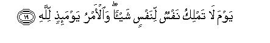

بسم الله الرحمن الرحيم
Sayyid Abul Ala Maududi - Tafhim al-Qur'an - The Meaning of the Qur'an
 82.
Surah Al Infitar (The Cleaving)
82.
Surah Al Infitar (The Cleaving)
It is derived from the word infatarat in the first verse. Infitar is an infinitive which means to cleave or split asunder, thereby implying that it is the Surah in which the splitting asunder of the sky has been mentioned.
This Surah and the Surah At-Takwir closely resemble each other in their subject matter. This shows that both were sent down in about the same period.
Its theme is the Hereafter. According to a tradition related in Musnad Ahmad, Tirmidhi, Ibn al-Mundhir, Tabarani, Hakim and Ibn Marduyah, on the authority of Hadrat Abdullah bin Umar, the Holy Messenger (upon whom be peace) said: "The one who wants that he should see the Resurrection Day as one would see it with one's eyes, should read Surah At-Takwir, Surah Al-Infitar and Surah Al-Inshiqaq."
In this Surah first the Resurrection Day has been described and it is said that when it occurs, every person will see whatever he has done in the world. After this, man has been asked to ponder the question: "O man, what has deluded you into thinking that the God, Who brought you into being and by Whose favor and bounty you possess the finest body, limbs and features among all creatures, is only bountiful and not just? His being bountiful and generous does not mean that you should become fearless of His justice."Then, man has been warned, so as to say: "Do not remain involved in any misunderstanding. Your complete record is being prepared. There are trustworthy writers who are writing down whatever you do." In conclusion, it has been forcefully stated that the Day of Resurrection will surely take place when the righteous shall enjoy every kind of bliss in Paradise and the wicked shall be punished in Hell. On that day no one shall avail anyone anything. All powers of judgment shall be with Allah.

In the name of Allah, the Compassionate, the Merciful.

[1-5] When the heaven is cleft asunder, and when the stars scatter, and when the seas are torn apart,1 and when the graves are laid open.2 Then every person shall know all his works, the former and the latter.3
[6-12] O man, what has beguiled you concerning your Lord, the gracious, Who created you, fashioned you, proportioned you, and put you together in whatever form He pleased?4 Indeed not!5 But (the fact is that) you (O men) deny (the meting out of ) rewards and punishments,6 although watchers have been appointed over you, honorable scribes, who know whatever you do.7


[13-19] Surely the righteous shall be in bliss, and the wicked shall indeed go to Hell. They shall enter it on the Day of Recompense, and shall never be able to be absent from it. And what do you know what the Day of Recompense is? Yes, what do you know what the Day of Recompense is? It is a Day when no one shall have the power to do anything for another.8 Judgment on that Day shall wholly rest with Allah.
1In Surah At-Takwir it has been said: "When the oceans are set ablaze," and here: "When the oceans are torn apart." When the two verses are read together, and this fact also is kept in view that even according to the Qur'an a terrible earthquake will occur on the Resurrection Day, which will shake up the entire earth all at once, the state of the splitting of the oceans and their being set ablaze ' seems to be as follows: first, because of the terrible convulsion, the bottom of the oceans will split asunder and their water will start sinking into the interior of the earth where an intensely hot lava is constantly boiling up. Coming into contact with the lava, water will dissolve into its two constituent parts, oxygen which helps combustion, and hydrogen, which is itself combustible. Thus, in the process pf dissolution and combustion, a chain reaction will start, which will set all the oceans 'of the world ablaze. This is our conjecture, the correct knowledge is only with Allah.
2In the first three verses, the first stage of the Resurrection has been mentioned, and in this verse the second stage is being described. "Opening of the graves" implies resurrection of the dead then.
3The words ma qaddamat wa akhkharat can have several meanings and all are implied here:
(1) Ma qaddamat is the good or evil act which man has sent forward, and ma akhkharat is what he refrained from doing. Thus, these Arabic words correspond to the acts of commission and omission in one's life.
(2) Ma qaddainat is what one did earlier and ma akhkharat what one did later; i.e. the whole life-work of man will appear before him date-wise and in proper sequence
(3) Whatever good and evil deeds a man did in his life is ma qaddamat and whatever effects and influences of his acts he left behind for human society is ma akhkharat.
4That is, "In the first place, the bounty and favor of your Beneficent Sustainer required that you should have acknowledged his bounties and become an obedient servant and should have felt shy of disobeying Him, but you were deluded into thinking that you have become whatever you are by your own effort, and you never thought that you should acknowledge that favor of Him Who gave you life. Secondly, it is your Lord's bounty and kindness that you can freely do whatever you like in the world and it never so happens that whenever you happen to commit an error, He should punish you with paralysis, or blind your eyes, or cause lightning to strike you. But you took His bountifulness for weakness and were beguiled into thinking that the Kingdom of your God was devoid of justice "
5That is, "There is no reasonable ground for you to be deluded. Your own physical existence itself tells that you did not come into being by yourself; your parents also did not make you. Man also did not come about as a result of the elements combining together by themselves accidentally; but a Wise and Powerful God has composed you into this perfect human shape and form. There are other kinds of animals in the world compared with which your excellent form and structure and your superior powers and faculties stand out in sharp contrast. Reason demanded that in view of all this you should have submitted gratefully and should never have dared commit disobedience of your beneficent Sustainer. You also know that your Lord and Sustainer is not only Compassionate and Bountiful but Almighty and Omnipotent as well. When an earthquake, cyclone or flood occurs by His Command, all your devices and measures tail to be effective. You also know that your Lord and Sustainer is not ignorant and foolish but Wise and knowing, and the necessary demand of wisdom and knowledge is that whoever is given intellect should also be held responsible for his acts; whoever is given powers should also be held accountable as to how he used those powers; and whoever is given the choice to do good or evil on his own responsibility, should also be rewarded for his good act and punished for his evil act. All these truths are clearly and plainly known to you; therefore, you cannot say that there exists a reasonable ground for you to be deluded concerning your Lord. Your own nature is sufficient evidence that the beneficence of the Master should never cause the servant to be fearless of Him, and be involved in the misunderstanding that he may do whatever he pleases, no one can harm him in any way.
6That is,"You have not been deluded and beguiled by any good reason but by your foolish concept that there is going to be no meting out of rewards and punishments after the life of this world. It is this wrong and baseless concept which has made you heedless of God, fearless of His justice and irresponsible in your moral attitude. "
7That is, "whether you deny the meting out of rewards and punishments, belie it, or mock it, the reality cannot change. The reality is .that your Lord has not left you to your self in the world, but has appointed over each one of you honest and upright guardians, who are recording objectively and faithfully all your good and evil acts, and none of your acts is hidden from them, whether you commit it in darkness, or in private, or in far off jungles, or in secret when you are fully satisfied that whatever you have done bas remained hidden from human eye. For these guardian angels Allah has used the words kiram-an katibin, i.e. writers who are honorable and noble They are neither attached in personal love with somebody, nor are inimical to anybody, so that they would prepare a fictitious record on the basis of their favoring one man and disfavoring another unduly. They are neither dishonest that without being present on duty they would make wrong entries by themselves; nor are they bribable so that they would take bribes and make false reports in favor of or against somebody. They are far above these moral weaknesses. Therefore, both the good and the bad people should be fully satisfied that each man's good acts will be recorded without any omission, and no one will have an evil act recorded in his account which he has not done. Then the second quality that has been mentioned of these angels is: "They know whatever you do " That is, they are not like the secret, intelligence agencies of the world, from which, despite all their search and scrutiny, many things remain hidden. They are fully aware of everyone's deeds. They accompany every person, at all places, under all conditions, in such a way that he himself does not know that someone is watching him, and they also know with what intention has somebody done a certain thing. Therefore the record prepared by them is a complete record in which nothing has been left un-recorded. About this very thing it has been said in Surah Al-Kahf 49: "Woe to us! What sort of a book it is, it has left nothing unrecorded of our doings, small or great. They will see before them everything, whatever they had done."
8That is, no one there will have the power to save anyone from suffering the consequences of his deeds; no one there will be so influential, strong, or such a favorite with Allah that he should behave stubbornly in the Divine Court and say: "Such and such a one is a close relative or associate of mine; he will have to be forgiven, no matter what evils He might have committed in the world."